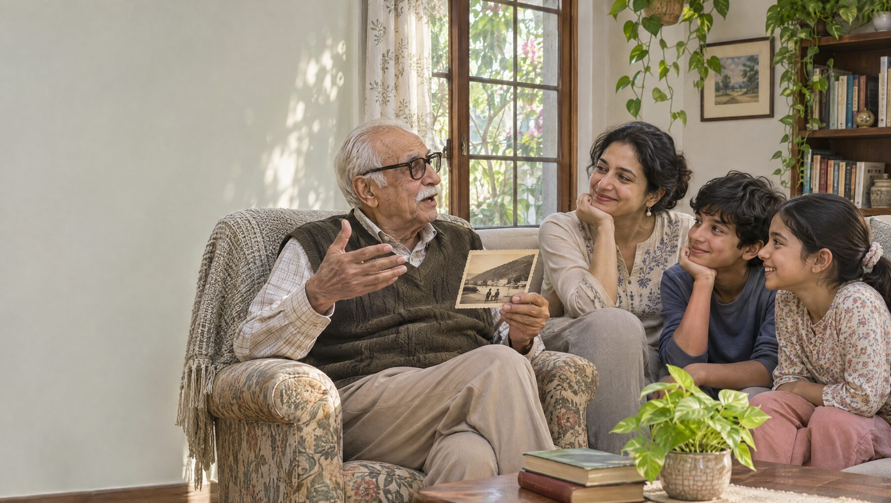

How a story gets kept
Four steps, in the order a family actually does them. You can stop after any one of them.

Dearling asks
Who was your father's father?
You talk. The tree listens.
A voice asks about your family, one question at a time. Say a name and it appears on the tree. Stop whenever you like and pick it up tomorrow.

Add photographs and name the faces.
Bring old prints and new phone photos. If you choose, Dearling suggests who is in them and you say yes or no. Face matching stays off until you switch it on.

Recording1:42
"We took the ferry every Sunday..."
Tell the story out loud.
Pick a photograph and talk about it. Your voice is recorded and written out as text, so the story can be heard and read.
Kept inside the family
- Only your family sees it.Photographs and stories are private to the family that made them.
- You invite people by email.There is no public page and no search.
- No passwords to remember.You sign in with a link we send to your email.